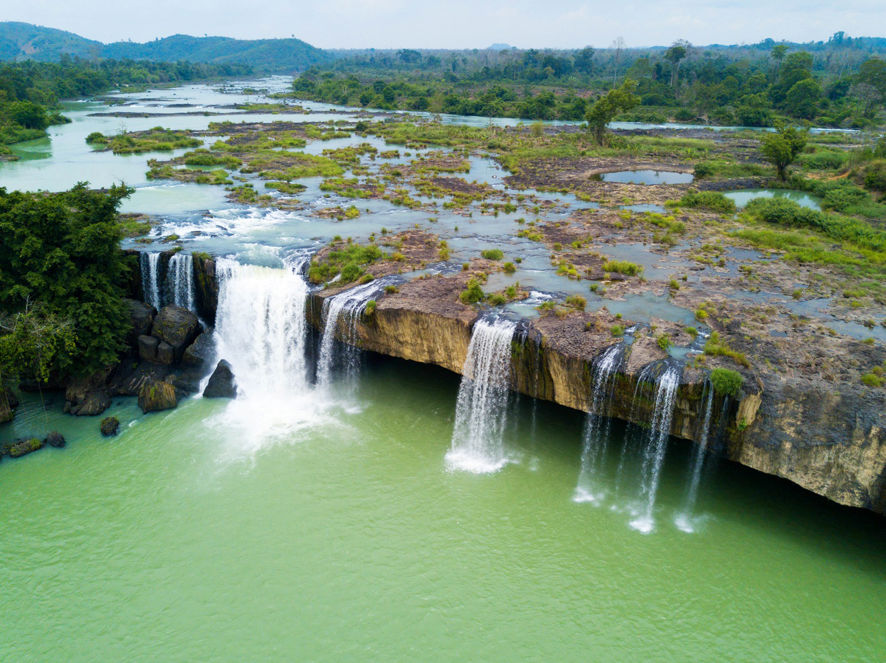

HELLO, IT'S NICE TO MEET YOU

Đắk Lắk (trước đây là Darlac) là tỉnh miền núi nằm ở trung tâm vùng Tây Nguyên, miền Trung của Việt Nam. Thủ phủ của tỉnh là thành phố Buôn Ma Thuột.
Đắk Lắk được xem là một trong những cái nôi nuôi dưỡng Không gian văn hóa Cồng chiêng Tây Nguyên, được UNESCO công nhận là kiệt tác truyền khẩu và phi vật thể của nhân loại.
Đắk Lắk có bản sắc văn hóa đa dạng như các trường ca truyền miệng lâu đời Đam San, Xinh Nhã dài hàng nghìn câu, như các ngôn ngữ của người Ê Đê,
người M'Nông...như các đàn đá, đàn T'rưng, đàn k'lông pút... Đắk Lắk được xem là một trong những cái nôi nuôi dưỡng Không gian văn hóa Cồng Chiêng Tây Nguyên,
được UNESCO công nhận là Kiệt tác truyền khẩu và phi vật thể nhân loại.
Các lễ hội đáng chú ý gồm có Lễ mừng lúa mới, Lễ bỏ mả, Lễ hội đâm trâu, Lễ cúng Bến nước, Lễ hội đua voi, Lễ hội Cồng chiêng và Lễ hội cà phê…
được tổ chức đều đặn hàng năm như một truyền thống. Các Di tích lịch sử tại Đắk Lắk như Đình Lạc Giao,
Chùa Sắc tứ Khải Đoan, Nhà đày Buôn Ma Thuột, Khu Biệt điện Bảo Đại, Toà Giám mục tại Đắk Lắk, Hang đá Đắk Tur và Tháp Yang Prong...
Đắk Lắk là vùng đất làm say lòng người không chỉ vì phong cảnh mà còn vì những món ăn độc đáo.
Đặc sản Đắk Lắk là những món ăn, đồ uống, hoặc sản phẩm có nguồn gốc từ vùng đất Đắk Lắk, nổi tiếng với cà phê, rượu cần, và nhiều loại trái cây, rau rừng, và thịt săn.
Chỉ cần một lần đặt chân đến mảnh đất Đắk Lắk, mọi du khách đều sẽ bị mê hoặc bởi thiên nhiên núi rừng hùng vĩ, con người thân thiện và nhiều món ăn hấp dẫn.
Và điều mà nhiều du khách cảm thấy tò mò nhất chắc hẳn là đặc sản Đắk Lắk phải không nào? Vậy vùng đất này có những món ăn nào có thể khiến du khách hấp dẫn đến như vậy!
Hãy để VN Foods giúp bạn hiểu hơn về văn hoá ẩm thực nơi đây nhé!